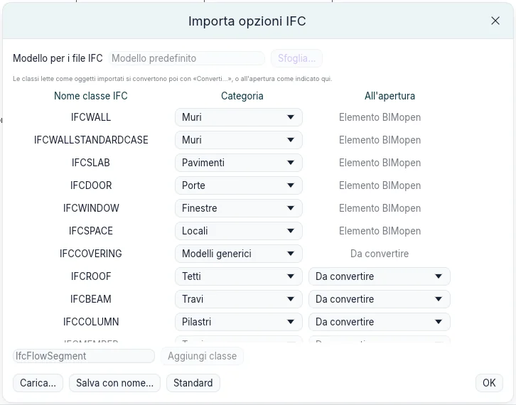
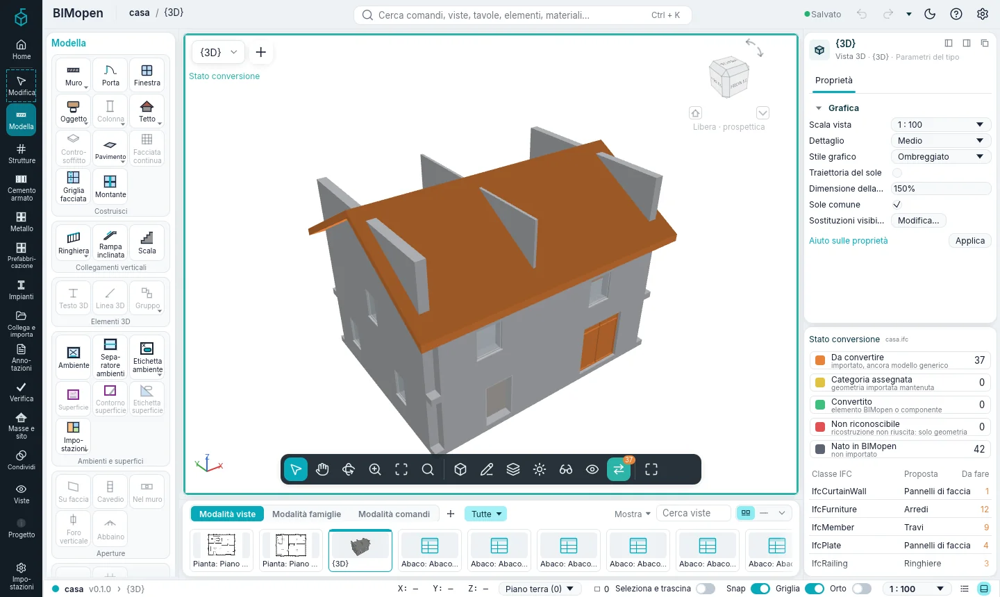
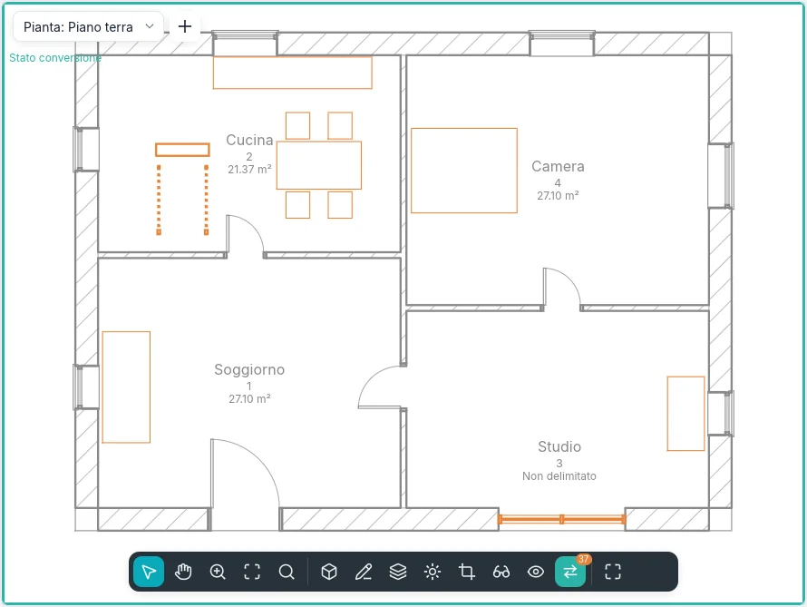
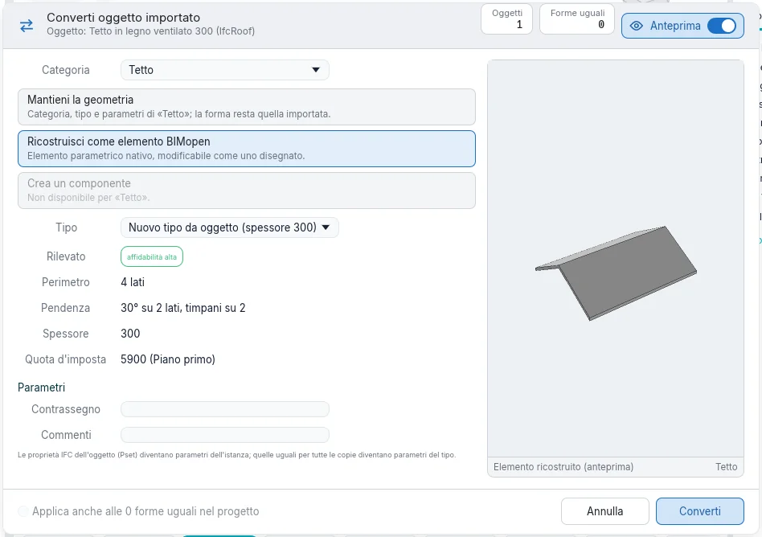
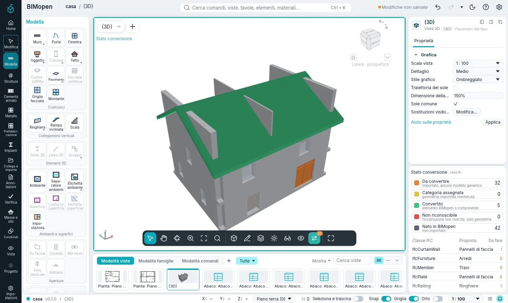
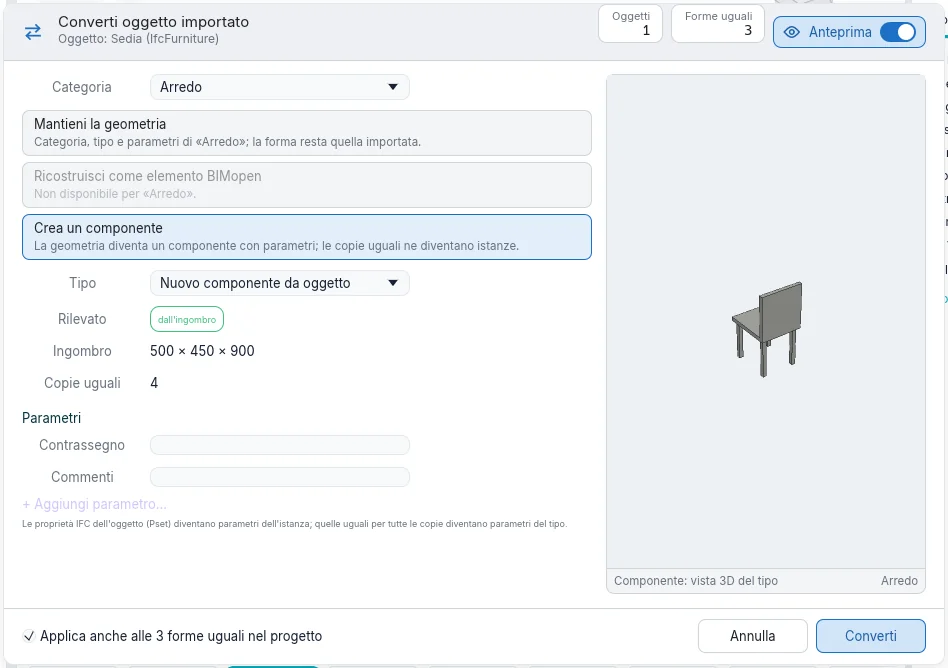
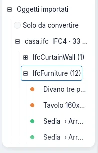
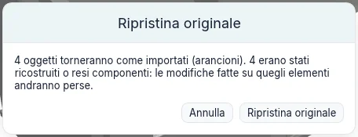

Importazione e conversione
Un modello fatto con un altro programma arriva come file IFC. BIMopen ne legge muri, pavimenti, porte, finestre e spazi come elementi propri. Tutto il resto che ha una forma (tetti, travi, pilastri, scale, ringhiere, facciate continue, arredi, sanitari) resta un oggetto importato: la sua geometria come è stata letta, come modello generico. Converti fa poi di ogni oggetto importato un elemento BIMopen di qualunque categoria, quando e quanto serve.
Aprire un file IFC
- Apri il menu dell'applicazione (il marchio di BIMopen in cima alla barra laterale) e scegli Apri ➤ IFC….
- Scegli un file IFC2x3 o IFC4.
BIMopen crea un nuovo progetto: i piani diventano livelli, i muri sono ricostruiti dal loro asse, le solette diventano pavimenti, porte e finestre vanno nei muri che le loro aperture tagliano, gli spazi diventano locali. Ogni altro oggetto con una forma diventa un oggetto importato. Ognuno ricorda:
- il file da cui viene e il suo formato (
casa.ifc · IFC4); - la sua classe IFC (
IfcRoof,IfcFurniture…) e il suo identificativo; - l'oggetto di cui fa parte: le rampe di una scala, i pannelli di una facciata continua;
- i suoi insiemi di proprietà e quantità, in Proprietà sotto Proprietà IFC.
I messaggi contano che cosa è stato letto, che cosa è stato approssimato e che cosa è rimasto fuori.
Importa opzioni IFC
Coordina ▸ Opzioni IFC… apre Importa opzioni IFC: che cosa diventa ogni classe IFC quando si apre un file.

- Muri, solette, porte, finestre e spazi si leggono come Elemento BIMopen; ciascuno si può leggere invece come oggetto importato (Modelli generici) o lasciare fuori (Non importato).
- Le altre classi si leggono come oggetti importati. Categoria è la categoria proposta per ogni classe quando la si converte: qualunque categoria di BIMopen.
- All'apertura dice che cosa succede loro all'apertura del file: Da convertire le lascia per dopo; Mantieni la geometria, Ricostruisci come elemento BIMopen o Crea un componente le converte subito (vedi sotto).
- Aggiungi classe aggiunge una classe che l'elenco non ha.
- Carica… legge un file di assegnazione delle classi, Salva con nome… ne scrive uno: un file di testo, una classe per riga. Standard rimette l'assegnazione predefinita.
Le opzioni restano da una sessione all'altra.
Stato conversione
Finché il progetto contiene oggetti importati ancora da convertire, la barra della vista mostra Stato conversione, con il loro numero. Il suggerimento dice quanti sono e in quante classi IFC.
Fai clic: la vista mostra ogni oggetto nel colore del suo stato, dentro una cornice verde acqua.
| Colore | Stato | Significato |
|---|---|---|
| Arancione | Da convertire | importato, ancora modello generico |
| Giallo | Categoria assegnata | geometria importata mantenuta, con una categoria |
| Verde | Convertito | elemento BIMopen o istanza di componente |
| Rosso | Non riconoscibile | la ricostruzione non ha riconosciuto la forma: solo geometria |
| Grigio | Nato in BIMopen | non importato |

Funziona in piante, sezioni, prospetti e viste 3D, e cambia solo la finestra: il modello e le altre viste restano come sono. Mentre è attivo si selezionano solo gli oggetti importati.

Il pannello Stato conversione, sotto Proprietà, ha:
- la legenda con il conteggio di ogni stato: un clic su uno stato lo nasconde nella vista, o lo mostra di nuovo;
- le classi IFC con oggetti ancora da convertire, la categoria proposta per ciascuna e quanti ne restano. Un clic su una classe seleziona i suoi oggetti da convertire e apre Converti….
Quando non resta niente da convertire, il pannello lo dice. Spegni Stato conversione e il suo pulsante esce dalla barra della vista.
Nello stile Classica il pannello è una scheda accanto a Proprietà; in modalità touch è un pannello a scomparsa, aperto dalle impostazioni della vista.
Convertire un oggetto importato
Seleziona uno o più oggetti importati: si apre la scheda contestuale Modifica | Oggetti importati. Converti… apre Converti oggetto importato.

- Categoria: che cosa diventa l'oggetto. Viene proposta per prima quella della classe.
- Uno dei tre modi (sotto). Un modo che non vale per la categoria è grigio.
- Tipo: uno dei tipi della categoria, o un nuovo tipo fatto dall'oggetto.
- Rilevato: che cosa BIMopen legge nella forma e quanto ne è sicuro.
- Parametri: Contrassegno e Commenti, e le proprietà IFC dell'oggetto.
- Converti.
L'anteprima mostra che cosa diventerà l'oggetto. L'interruttore Anteprima nell'intestazione la nasconde; il dialogo mantiene la sua dimensione.
I tre modi
| Modo | Categorie | Che cosa succede |
|---|---|---|
| Mantieni la geometria | tutte | L'oggetto prende la categoria, un tipo e i parametri. Conta negli abachi, nei filtri, nella visibilità e nell'esportazione IFC come elemento di quella categoria; la sua forma resta quella importata. Si sposta, ruota e specchia. |
| Ricostruisci come elemento BIMopen | muri, pavimenti, tetti, porte, finestre | BIMopen legge la forma e crea l'elemento nativo, modificabile come uno disegnato: asse, spessore e altezza di un muro; contorno, spessore e quota superiore di un pavimento; perimetro, pendenze, spessore e quota d'imposta di un tetto; una porta o una finestra nel muro in cui si trova, con larghezza, altezza e davanzale. |
| Crea un componente | arredi, sanitari, modelli generici, porte, finestre, pilastri, travi | La geometria diventa un tipo di componente con Larghezza, Profondità e Altezza dal suo ingombro; cambiandole la forma si allunga. L'oggetto diventa una sua istanza. |
Una forma che non si può ricostruire come la categoria scelta diventa rossa (Non riconoscibile) e resta com'era: convertila di nuovo mantenendo la geometria. La ricostruzione di pilastri, travi, scale e ringhiere arriva in una fase successiva.
Categoria in Proprietà fa lo stesso di Mantieni la geometria: scegliere lì una categoria converte subito l'oggetto selezionato.

Componenti da oggetti importati
Crea componente nella scheda contestuale apre il dialogo con Crea un componente scelto.

Le proprietà IFC uguali in tutte le copie diventano parametri del tipo; quelle diverse restano a ogni istanza. Il componente compare nell'Indice del progetto sotto Oggetti importati, e i suoi Parametri del tipo cambiano tutte le istanze insieme.
Forme uguali
Le copie di una stessa forma, spostate e ruotate in pianta, si riconoscono come uguali. Seleziona forme uguali le seleziona; nel dialogo, Applica anche alle N forme uguali nel progetto le converte insieme (attivo di default quando si crea un componente). Come istanze di un solo componente occupano meno memoria e si disegnano più in fretta nei modelli grandi.
Selezionare gli oggetti importati
- Seleziona classe seleziona gli oggetti importati della stessa classe IFC.
- Una classe nel pannello Stato conversione, o Converti tutti (N)… su una classe nell'Indice del progetto, seleziona i suoi oggetti da convertire e apre il dialogo.
- Un oggetto che fa parte di un altro (una rampa di una scala) va con lui: convertire l'intero prende con sé le sue parti.
Gli oggetti importati nell'Indice del progetto
Oggetti importati nell'Indice del progetto elenca ogni file letto, con il suo formato e quanti oggetti restano da convertire; sotto, le classi IFC, sotto ogni classe i suoi oggetti, con il colore del loro stato e, una volta convertiti, la categoria che sono diventati. Gli oggetti fatti di parti elencano sotto di sé le loro parti.

- Solo da convertire nasconde ciò che è già convertito.
- Un clic su un oggetto lo seleziona; un doppio clic lo mostra in una vista.
- Il tasto destro su una classe: Converti tutti (N)…, Seleziona tutti da convertire (N), Ripristina originali (N).
- Il tasto destro su un file: le stesse voci, e Rimuovi riferimenti all'origine….
- Il tasto destro su un oggetto: Converti…, Seleziona forme uguali, Mostra nella vista, Occulta nella vista, Ripristina originale.
Ripristinare gli originali
Ciò che una conversione sostituisce resta nel progetto, nel file .bimopen: l'oggetto originale,
con le parti che ha preso con sé. Ripristina originale (nella scheda contestuale, nell'Indice
del progetto o nel menu del tasto destro) lo rimette com'era stato importato, di nuovo arancione.

Chiede prima conferma, e dice che cosa andrà perso: le modifiche fatte su elementi ricostruiti o componenti, e le porte e finestre ospitate nei muri convertiti. Un componente creato dalla conversione se ne va con la sua ultima istanza. Annulla toglie una conversione o un ripristino come ogni altra modifica.
La geometria degli originali è conservata una sola volta per ogni mesh uguale, quindi tenerli costa poco. Quando le conversioni sono definitive, Rimuovi riferimenti all'origine… sul file nell'Indice del progetto elimina gli originali: dopo, Ripristina originale non è più possibile.
Prossimamente
- Aggiorna da file: rileggere il file d'origine e aggiornarne gli oggetti.
- Strumenti per faccia, per mettere muri, pavimenti e tetti su forme libere e curve.
- La ricostruzione di pilastri, travi, scale e ringhiere.
- La conversione degli oggetti dei file OBJ e glTF con lo stesso dialogo.